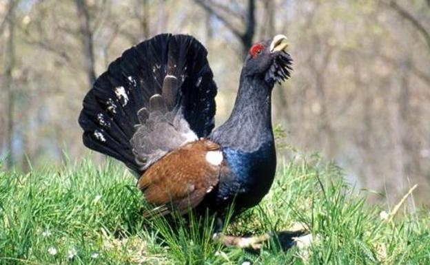
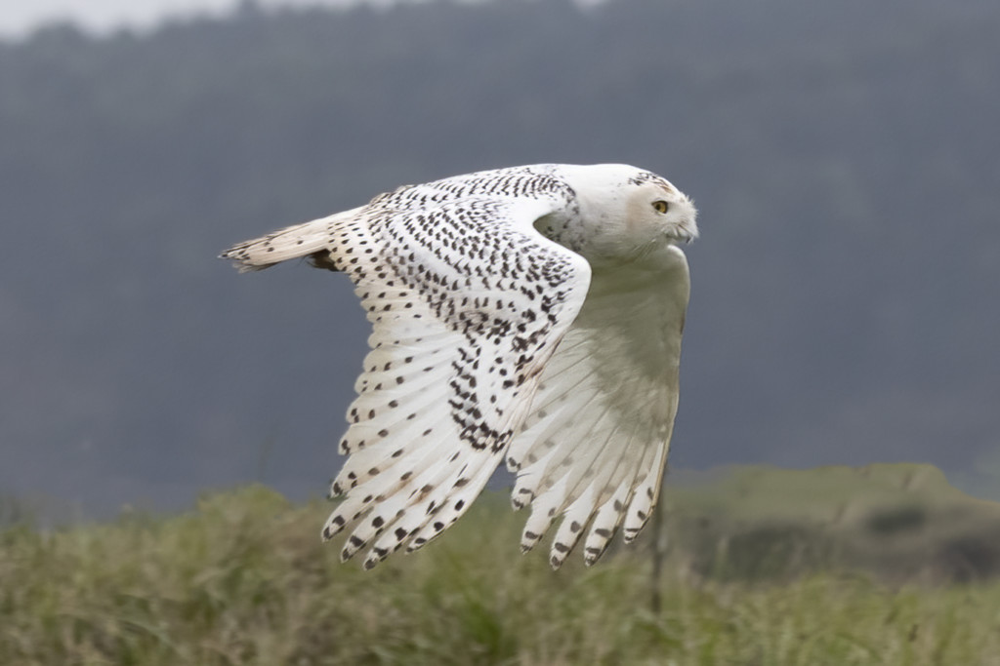
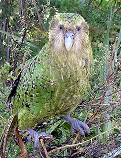
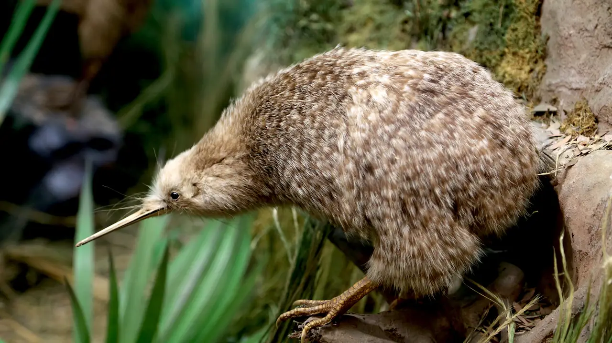
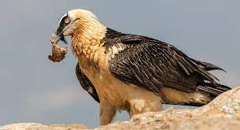

| Información | Imagen | Audio | |
|---|---|---|---|
| Nombre | Datos Curiosos | ||
| Urogallo Cantábrico | El cambio climático, la lenta degradación de su hábitat y la caza han conseguido que el urogallo cantábrico haya desaparecido del 60% de los espacios que habitaba en 1982, en su mayoría en el norte de la península (Asturias y Castilla y León, y parte de los Pirineos). |  | |
| Búho nival | Esta ave oriunda del hemisferio norte robó los corazones de varias generaciones gracias a la saga de libros y películas de Harry Potter. El búho nival o búho de las nieves entró en las casas de muchos milenials en forma de Hedwig, la 'lechuza' del joven mago. Por desgracia, esta clase de búho está considerada como vulnerable, y en algunos lugares, como Finlandia, está en peligro de extinción. Su población ha venido descendiendo en los últimos años (un 85%), especialmente por el deshielo de su hábitat, combinado con la desaparición de su alimento principal, los ratones salvajes. |  | |
| Kakapo | El loro más grande y longevo del mundo es también uno de los símbolos de Nueva Zelanda. En 1995, solo quedaba medio centenar de kakapo en el mundo. Ahora, se conocen alrededor de 147 adultos vivos. No es de extrañar, por tanto, que esté clasificada como 'especie en peligro crítico'. El kakapo es el único loro nocturno y no volador que se conoce. Puede llegar a pesar hasta 4 kilos y cuando se encuentra con un depredador, se queda paralizada. Esta ave confía en que sus plumas verdes jaspeadas le proporcionen el camuflaje perfecto en el bosque. |  | |
| Kiwi | Este pájaro no volador neozelandés tiene razones para volver a sonreír. A punto de desaparecer con la llegada de los británicos a su isla de origen, el kiwi, símbolo por antonomasia de Nueva Zelanda, ha evitado la extinción. Sin embargo, eso no quiere decir que no esté en riesgo. Y no todas las especies de kiwi están fuera de peligro. El kiwi moteado ha pasado de solo contar con 5 ejemplares a ver cómo la 'familia' crecía hasta los 1.600, gracias a las labores de recuperación y conservación. Sin embargo, el rowi o kiwi de okarito está considerado como una especie vulnerable por la UICN, pues que solo quedan 400 individuos. El cambio climático y la deforestación amenazan a este animal tan característico. |  | |
| Quebrantahuesos | El quebrantahuesos es una de las aves más amenazadas de Europa. En España, está catalogada como especie en peligro de extinción. El esfuerzo de conservación de este animal, capaz de alimentarse de huesos gracias a las células secretoras de ácido que posee, ha sido ingente en nuestro país. A pesar de ello, sigue encontrando múltiples amenazas en su vuelo por el Pirineo o la Sierra de Guara. Especialmente, su hábitat se ve en peligro por culpa de los tendidos eléctricos, los raticidas utilizados y algunas actividades deportivas que se practican en la zona. Y eso que se ha convertido en un gran atractivo turístico. |  | |
| "Animals are such agreeable friends - they ask no questions; they pass no criticisms." - George Eliot | |||
Un ave es un tipo de animal vertebrado perteneciente a la clase Aves. Las aves se caracterizan por tener plumas, alas y pico. Son animales endotérmicos, lo que significa que generan y regulan internamente su propia temperatura corporal. Las aves se encuentran en una amplia variedad de formas, tamaños y colores, y se distribuyen por todo el mundo, desde los desiertos hasta los polos.
Una de las características más distintivas de las aves es su capacidad para volar, aunque no todas las especies de aves pueden volar. Las alas, compuestas por huesos ligeros y cubiertas de plumas, les permiten desplazarse en el aire.
Los picos de las aves varían en forma y tamaño, dependiendo de su dieta y comportamiento. Pueden tener picos largos y delgados para alimentarse de néctar, picos curvos y afilados para desgarrar carne, o picos robustos para triturar semillas.
Por ultimo, las aves son conocidas por su diversidad de cantos y vocalizaciones, que utilizan para comunicarse, establecer territorios y atraer parejas.